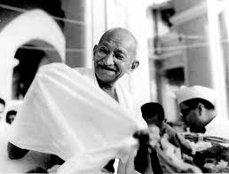
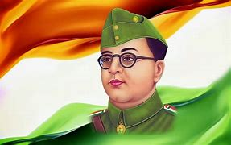

Gandhi
Mohandas Karamchand Gandhi (/ˈɡɑːndi, ˈɡændi/;[3] GAHN-dee; 2 October 1869 – 30 January 1948) was an Indian lawyer,[4] anti-colonial nationalist[5] and political ethicist[6] who employed nonviolent resistance to lead the successful campaign for India's independence from British rule,[7] and to later inspire movements for civil rights and freedom across the world. The honorific Mahātmā (Sanskrit: "great-souled", "venerable"), first applied to him in 1914 in South Africa, is now used throughout the world.[8][9] Born and raised in a Hindu family in coastal Gujarat, Gandhi trained in the law at the Inner Temple, London, and was called to the bar at age 22 in June 1891. After two uncertain years in India, where he was unable to start a successful law practice, he moved to South Africa in 1893 to represent an Indian merchant in a lawsuit. He went on to live in South Africa for 21 years. It was here that Gandhi raised a family and first employed nonviolent resistance in a campaign for civil rights. In 1915, aged 45, he returned to India and soon set about organising peasants, farmers, and urban labourers to protest against excessive land-tax and discrimination. Assuming leadership of the Indian National Congress in 1921, Gandhi led nationwide campaigns for easing poverty, expanding women's rights, building religious and ethnic amity, ending untouchability, and, above all, achieving swaraj or self-rule. Gandhi adopted the short dhoti woven with hand-spun yarn as a mark of identification with India's rural poor. He began to live in a self-sufficient residential community, to eat simple food, and undertake long fasts as a means of both introspection and political protest. Bringing anti-colonial nationalism to the common Indians, Gandhi led them in challenging the British-imposed salt tax with the 400 km (250 mi) Dandi Salt March in 1930 and in calling for the British to quit India in 1942. He was imprisoned many times and for many years in both South Africa and India. Gandhi's vision of an independent India based on religious pluralism was challenged in the early 1940s by a Muslim nationalism which demanded a separate homeland for Muslims within British India.[10] In August 1947, Britain granted independence, but the British Indian Empire[10] was partitioned into two dominions, a Hindu-majority India and a Muslim-majority Pakistan.[11] As many displaced Hindus, Muslims, and Sikhs made their way to their new lands, religious violence broke out, especially in the Punjab and Bengal. Abstaining from the official celebration of independence, Gandhi visited the affected areas, attempting to alleviate distress. In the months following, he undertook several hunger strikes to stop the religious violence. The last of these, begun in Delhi on 12 January 1948 when he was 78,[12] also had the indirect goal of pressuring India to pay out some cash assets owed to Pakistan.[12] Although the Government of India relented, as did the religious rioters, the belief that Gandhi had been too resolute in his defence of both Pakistan and Indian Muslims, especially those besieged in Delhi, spread among some Hindus in India.[13][12] Among these was Nathuram Godse, a militant Hindu nationalist from western India, who assassinated Gandhi by firing three bullets into his chest at an interfaith prayer meeting in Delhi on 30 January 1948.[14] Gandhi's birthday, 2 October, is commemorated in India as Gandhi Jayanti, a national holiday, and worldwide as the International Day of Nonviolence. Gandhi is commonly, though not formally, considered the Father of the Nation in India[15][16] and was commonly called Bapu[17] (Gujarati: endearment for father,[18] papa[18][19]). Read more>>>
Subhash Chandra Bose
Subhas Chandra Bose (/ʃʊbˈhɑːs ˈtʃʌndrə ˈboʊs/ (listen) shuub-HAHSS CHUN-drə BOHSS;[12] 23 January 1897 – 18 August 1945[4][5]) was an Indian nationalist whose defiance of British authority in India made him a hero among Indians,[h][i][j] but his wartime alliances with Nazi Germany and Imperial Japan left a legacy vexed by authoritarianism,[16][k][l][m][n] anti-Semitism,[o][p][q][23] and military failure.[r][26][27][s][t] The honorific Netaji (Hindustani: "Respected Leader") was first applied to Bose in Germany in early 1942—by the Indian soldiers of the Indische Legion and by the German and Indian officials in the Special Bureau for India in Berlin. It is now used throughout India.[u] Subhas Bose was born into wealth and privilege in a large Bengali family in Orissa during the British Raj. The early recipient of an Anglocentric education, he was sent after college to England to take the Indian Civil Service examination. He succeeded with distinction in the vital first exam but demurred at taking the routine final exam, citing nationalism to be a higher calling. Returning to India in 1921, Bose joined the nationalist movement led by Mahatma Gandhi and the Indian National Congress. He followed Jawaharlal Nehru to leadership in a group within the Congress which was less keen on constitutional reform and more open to socialism.[v] Bose became Congress president in 1938. After reelection in 1939, differences arose between him and the Congress leaders, including Gandhi, over the future federation of British India and princely states, but also because discomfort had grown among the Congress leadership over Bose's negotiable attitude to non-violence, and his plans for greater powers for himself.[32] After the large majority of the Congress Working Committee members resigned in protest,[33] Bose resigned as president and was eventually ousted from the party.[34][35][36] In April 1941 Bose arrived in Nazi Germany, where the leadership offered unexpected but equivocal sympathy for India's independence.[37][38] German funds were employed to open a Free India Centre in Berlin. A 3,000-strong Free India Legion was recruited from among Indian POWs captured by Erwin Rommel's Afrika Korps to serve under Bose.[39][w] Although peripheral to their main goals, the Germans inconclusively considered a land invasion of India throughout 1941. By the spring of 1942, the German army was mired in Russia and Bose became keen to move to southeast Asia, where Japan had just won quick victories.[41] Adolf Hitler during his only meeting with Bose in late May 1942 offered to arrange a submarine.[42] During this time, Bose became a father; his wife,[6][x] or companion,[43][y] Emilie Schenkl, gave birth to a baby girl.[6][z][37] Identifying strongly with the Axis powers, Bose boarded a German submarine in February 1943.[44][45] Off Madagascar, he was transferred to a Japanese submarine from which he disembarked in Japanese-held Sumatra in May 1943.[44] With Japanese support, Bose revamped the Indian National Army (INA), which comprised Indian prisoners of war of the Indian Army who had been captured by the Japanese in the Battle of Singapore.[46][47][48] A Provisional Government of Free India was declared on the Japanese-occupied Andaman and Nicobar Islands and was nominally presided by Bose.[49][2][aa] Although Bose was unusually driven and charismatic, the Japanese considered him to be militarily unskilled,[ab] and his soldierly effort was short-lived. In late 1944 and early 1945, the Indian Army reversed the Japanese attack on India. Almost half the Japanese forces and the participating INA contingent were killed.[ac][ad] The remaining INA was driven down the Malay Peninsula and surrendered with the recapture of Singapore. Bose chose to escape to Manchuria to seek a future in the Soviet Union which he believed to have turned anti-British. He died from third-degree burns received when his overloaded plane crashed in Japanese Taiwan on August 18, 1945.[ae] Some Indians did not believe that the crash had occurred,[af] expecting Bose to return to secure India's independence.[ag][ah][ai] The Indian National Congress, the main instrument of Indian nationalism, praised Bose's patriotism but distanced itself from his tactics and ideology.[aj][57] The British Raj, never seriously threatened by the INA,[ak][al] charged 300 INA officers with treason in the INA trials, but eventually backtracked in the face of opposition by the Congress,[am] and a new mood in Britain for rapid decolonisation in India.[an][57][13] Bose's legacy is mixed. Among many in India, he is the muscular hero, his saga serving as a would-be counterpoise to the many actions of regeneration, negotiation, and reconciliation over a quarter-century through which the independence of India was achieved.[ao][ap][aq] His collaborations with Japanese Fascism and Nazism pose serious ethical dilemmas,[ar] especially his reluctance to publicly criticize the worst excesses of German anti-Semitism from 1938 onwards or to offer refuge in India to its victims.[as][at][au]
Read more>>>